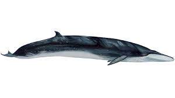
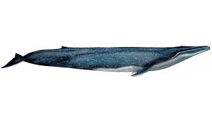

Peligro de Extincion
Ballena Azul

La ballena azul es el animal conocido más grande que jamás haya poblado la Tierra. Estos majestuosos mamíferos marinos dominan los océanos con sus 30 metros de longitud y hasta 180 toneladas de peso. Solo su lengua puede pesar tanto como un elefante, y el corazón, como un automóvil. Recibe también el nombre de rorcual azul, compartiendo familia con otros rorcuales como el rorcual común o el rorcual boreal.
Las ballenas azules alcanzan estas desorbitadas dimensiones con una dieta compuesta de plancton y krill, un animal parecido a un camarón diminuto. En determinados momentos del año, una ballena azul adulta consume unas 3,5 toneladas de krill al día. Es precisamente el aumento de krill lo que los expertos señalan como la causa de que estos cetáceos, gravemente amenazados,estén volviendo a dejarse ver por aguas españolas.
Tanto en nuestras aguas como a nivel general, las ballenas azules y los rorcuales, tanto los comunes como los norteños, se encuentran seriamente amenazados por el efecto del cambio climático, por la falta de alimento y por la fuerte explotación pesquera.
Ballena Franca

Es una ballena de gran tamaño, las hembras pueden llegar a medir más de 17 m de largo, siendo un poco menores los machos. Su peso bordea las 45 toneladas aunque hay registros de captura que indican que las hembras pueden pesar más de 60 toneladas. Su robusto cuerpo se caracteriza por no tener aleta dorsal ni surcos ventrales.El riesgo de extinción de la misma ha sido resaltado a nivel mundial, en particular por la Unión Internacional para la Conservación de la Naturaleza. Es por esto que resulta vital que las personas conozcan la importancia de la ballena franca y de su conservación, así como el apoyo de nuevos actores en las labores que adelantan profesionales.
Ballena Gris

La ballena gris (Eschrichtius robustus) es una de las especies más grandes del mundo marino. Mide de 11 a 15 metros con un peso aproximado de 30 toneladas.
Este cetáceo realiza una de las migraciones más largas, al recorrer más de 9 mil kilómetros en grupos segregados por sexo y edad.
Su travesía que dura aproximadamente tres meses inicia en los mares de Bering, Chukchi y Beaufort en Alaska, donde se alimentan para llegar hasta la costa occidental de la Península de Baja California y Golfo de California, donde realizar sus actividades reproductivas de diciembre a abril.
Son animales colosales, con grandes dimensiones y capaces de migrar por miles de kilómetros en los océanos. A pesar de la gran recuperación poblacional, problemas como el cambio climático podrían estar afectándola en la actualidad.
Ballena Sei

son una de las ballenas menos conocidas de todas las ballenas barbadas. Aunque han sido objeto de caza intensiva en la época ballenera moderna, no se han estudiado bien su distribución actual, los patrones de migración y el comportamiento.Las ballenas Sei están ampliamente distribuidas en aguas de mar abierto de regiones templadas y subpolares, porque prefieren al parecer las zonas con temperaturas entre 8-18 grados centígrados2. Como tales, parecen estar ausentes en la faja geográfica situada en torno al ecuador y su área de distribución no se extiende tanto hacia los polos y el borde de hielo como el de otras especies de ballenas barbadas.Desde que cesó la caza comercial de ballenas, se dispone de muy poca información sobre las actuales amenazas contra las ballenas Sei. Aunque las colisiones con los buques y el enredo en las artes de pesca pueden afectar en cierta medida a esta especie, estas amenazas son probablemente menos predominantes en su hábitat del océano abierto que en las zonas costeras donde otras ballenas y delfines están expuestas a mayor riesgo.
Ballena Bride

Las ballenas de Bryde son una de las especies de ballenas barbadas más escasamente estudiadas. Se les conoce también como "ballenas tropicales", debido a su preferencia por aguas de temperaturas de 16° Celsius o más, que se encuentran tanto en aguas costeras como de alta mar entre las latitudes 40° Sur y 40° Norte. Las ballenas de Bryde se conocen también como "ballenas tropicales", debido a su clara preferencia por aguas de temperaturas superiores a los 16°Celsius y su distribución en latitudes situadas entre los 40° sur y 40° norte. Si bien se han documentado algunos desplazamientos estacionales entre aguas más cálidas y más frías de algunas poblaciones, de otras se ha observado que residen durante todo el año en aguas costeras tropicales o subtropicales4,5. Puede detectarse su presencia tanto en aguas costeras como de alta mar, presencia que suele asociarse con áreas de elevada productividad, tales como las áreas de corrientes ascendentes